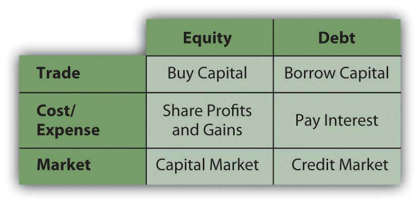
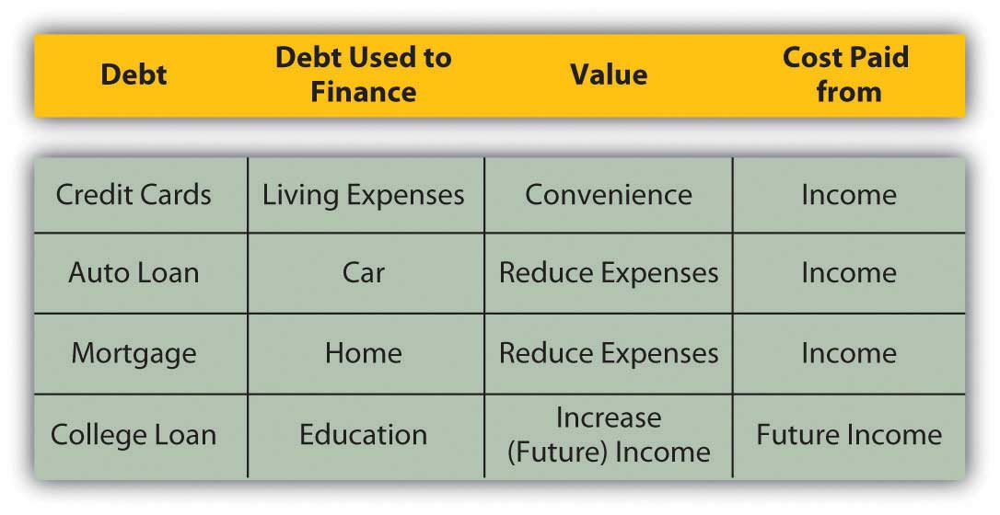

Buying capital, that is, borrowing enables you to invest without first owning capital. By using other people’s money to finance the investment, you get to use an asset before actually owning it, free and clear, assuming you can repay out of future earnings.
Borrowing capital has costs, however, so the asset will have to increase wealth, increase earnings, or decrease expenses enough to compensate for its costs. In other words, the asset will have to be more productive to earn enough to cover its financing costs—the cost of buying or borrowing capital to buy the asset.
Buying capital gives you equity, borrowing capital gives you debt, and both kinds of financing have costs and benefits. When you buy or borrow liquidity or cash, you become a buyer in the capital market.
You can buy capital from other investors in exchange for an ownership share or equityAn ownership share in an asset, entitling the holder to a share of the future gain (or loss) in asset value and of any future income (or loss) created., which represents your claim on any future gains or future income. If the asset is productive in storing wealth, generating income, or reducing expenses, the equity holder or shareholder or owner enjoys that benefit in proportion to the share of the asset owned. If the asset actually loses value, the owner bears a portion of the loss in proportion to the share of the asset owned. The cost of equityThe cost of having to share the benefits—capital gains or income (dividends)—from the investment. is in having to share the benefits from the investment.
For example, in 2004 Google, a company that produced a very successful Internet search engine, decided to buy capital by selling shares of the company (shares of stock or equity securities) in exchange for cash. Google sold over 19 million shares for a total of $1.67 billion. Those who bought the shares were then owners or shareholders of Google, Inc. Each shareholder has equity in Google, and as long as they own the shares they will share in the profits and value of Google, Inc. The original founders and owners of Google, Larry Page and Sergey Brin, have since had to share their company’s gains (or income) or losses with all those shareholders. In this case, the cost of equity is the minimum rate of return Google must offer its shareholders to compensate them for waiting for their returns and for bearing some riskIn finance, the probability that the value of an asset, income, or investment may decline in the future. that the company might not do as well in the future.
Borrowing is renting someone else’s money for a period of time, and the result is debtBorrowed capital, a liability, a loan that must be repaid.. During that period of time, rent or interestThe cost of debt expressed as an annual percentage of the principal. must be paid, which is a cost of debtThe cost of borrowing capital because of having to pay interest on the principal.. When that period of time expires, all the capital (the principalThe original amount of borrowed capital (a loan). amount borrowed) must be given back. The investment’s earnings must be enough to cover the interest, and its growth in value must be enough to return the principal. Thus, debt is a liability, an obligation for which the borrower is liable.
In contrast, the cost of equity may need to be paid only if there is an increase in income or wealth, and even then can be deferred. So, from the buyer’s point of view, purchasing liquidity by borrowing (debt) has a more immediate effect on income and expenses. Interest must be added as an expense, and repayment must be anticipated.
Figure 2.9 "Sources of Capital" shows the implications of equity and debt as the sources of capital.
Figure 2.9 Sources of Capital
Debt is a way to make an investment that could not otherwise be made, to buy an asset (e.g., house, car, corporate stock) that you couldn’t buy without borrowing. If that asset is expected to provide enough benefit (i.e., increase value or create income or reduce expense) to compensate for its additional costs, then the debt is worth it. However, if debt creates additional expense without enough additional benefit, then it is not worth it. The trouble is, while the costs are usually known up front, the benefits are not. That adds a dimension of risk to debt, which is another factor in assessing whether it’s desirable.
For example, after the housing boom began to go bust in 2008, homeowners began losing value in their homes as housing prices dropped. Some homeowners are in the unfortunate position of owing more on their mortgage than their house is currently worth. The costs of their debt were knowable upfront, but the consequences—the house losing value and becoming worth less than the debt—were not.
Debt may also be used to cover a budget deficit, or the excess of expenses over income. As mentioned previously, however, in the long run the cost of the debt will increase expenses that are already too big, which is what created the deficit in the first place. Unless income can also be increased, debt can only aggravate a deficit.
The value of debt includes the benefits of having the asset sooner rather than later, something that debt financing enables. For example, many people want to buy a house when they have children, perhaps because they want bedrooms and bathrooms and maybe a yard for their children. Not far into adulthood, would-be homebuyers may not have had enough time to save enough to buy the house outright, so they borrow to make up the difference. Over the length of their mortgage (real estate loan), they pay the interest.
The alternative would be to rent a living space. If the rent on a comparable home were more than the mortgage interest (which it often is, because a landlord usually wants the rent to cover the mortgage and create a profit), it would make more sense, if possible, to borrow and buy a home and be able to live in it. And, extra bedrooms and bathrooms and a yard are valuable while children are young and live at home. If you wait until you have saved enough to buy a home, you may be much older, and your children may be off on their own.
Another example of the value of debt is using debt to finance an education. Education is valuable because it has many benefits that can be enjoyed over a lifetime. One benefit is an increase in potential earnings in wages and salaries. Demand for the educated or more skilled employee is generally greater than for the uneducated or less-skilled employee. So education creates a more valuable and thus higher-priced employee.
It makes sense to be able to maximize value by becoming educated as soon as possible so that you have as long as possible to benefit from increased income. It even makes sense to invest in an education before you sell your labor because your opportunity cost of going to school—in this case, the “lost” wages of not working—is lowest. Without income or savings (or very little) to finance your education, typically, you borrow. Debt enables you to use the value of the education to enhance your income, out of which you can pay back the debt.
The alternative would be to work and save and then get an education, but you would be earning income less efficiently until you completed your education, and then you would have less time to earn your return. Waiting decreases the value of your education, that is, its usefulness, over your lifetime.
In these examples (Figure 2.11 "Debt: Uses, Value, and Cost"), debt creates a cost, but it reduces expenses or increases income to offset that cost. Debt allows this to happen sooner than it otherwise could, which allows you to realize the maximum benefit for the investment. In such cases, debt is “worth” it.
Figure 2.11 Debt: Uses, Value, and Cost
View the video “Paying Off Student Loans”: http://videos.howstuffworks.com/marketplace/4099-paying-off-student-loans-video.htm. Students fear going into debt for their education or later have difficulty paying off student loans. This video presents personal financial planning strategies for addressing this issue.